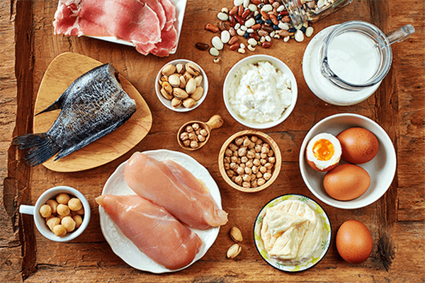

CARBOHIDRATOS
Los carbohidratos son moléculas de azúcar. Junto con las proteínas y las grasas, los carbohidratos son uno de los tres nutrientes principales que se encuentran en alimentos y bebidas.
Los macronutrientes son aquellas sustancias que proporcionan energía al organismo para un buen funcionamiento, y otros elementos necesarios para reparar y construir estructuras orgánicas, para promover el crecimiento y para regular procesos metabólicos.
Los macronutrientes están constituidos por: Carbohidratos, proteinas y grasas.
Los carbohidratos son moléculas de azúcar. Junto con las proteínas y las grasas, los carbohidratos son uno de los tres nutrientes principales que se encuentran en alimentos y bebidas.
Las proteínas son moléculas formadas por aminoácidos que están unidos por un tipo de enlaces conocidos como enlaces peptídicos. Están compuestas por: carbono, hidrógeno, oxígeno, nitrógeno.
Las grasas son nutrientes que dan energía. Las grasas tienen 9 calorías en cada gramo. Las grasas ayudan en la absorción de las vitaminas A, D, E y K que se disuelven en grasa.